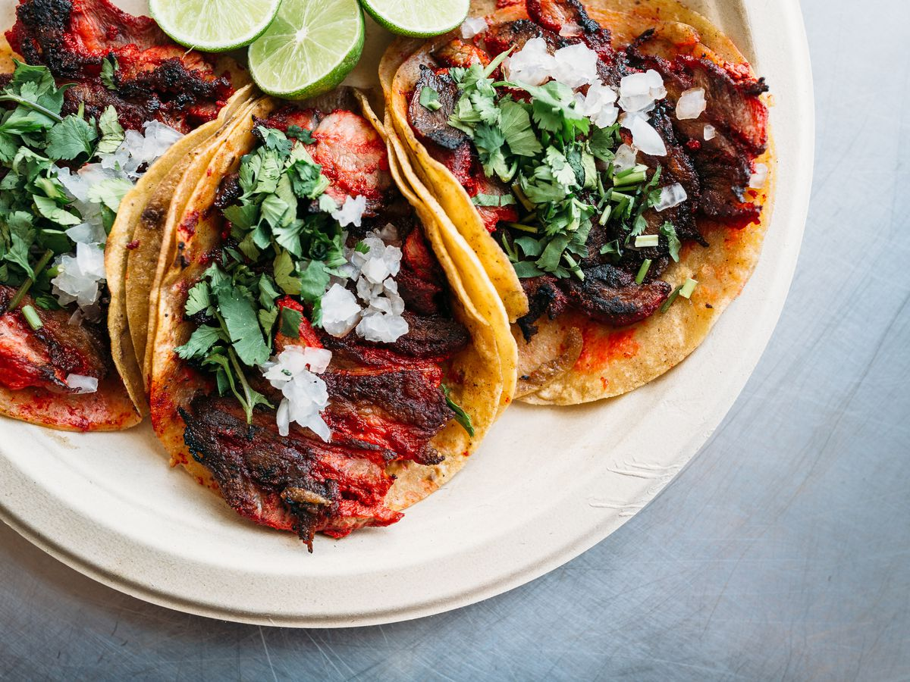

Taco

Description:
This is a recipe to make some delicious tacos. Not only are they healthy but the ingredients are easy
to find on any food market, so feel free to follow this recipe.
Ingredients:
- Tortilla
- Meat
- onion
- cilantro
- lime
- red or green sauce
Steps:
- heat tortillas
- Cook meat
- Wash onions and cilantro and slice them up
- put everything on the tortilla and close it
- Add lime
- Add either sauce
- Enjoy!